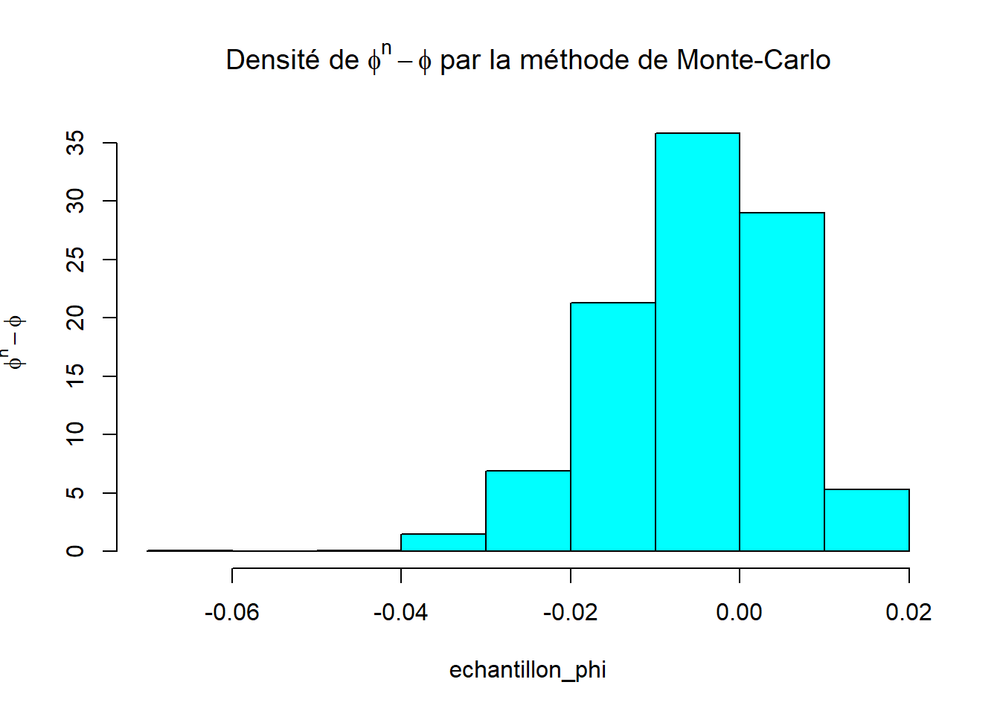
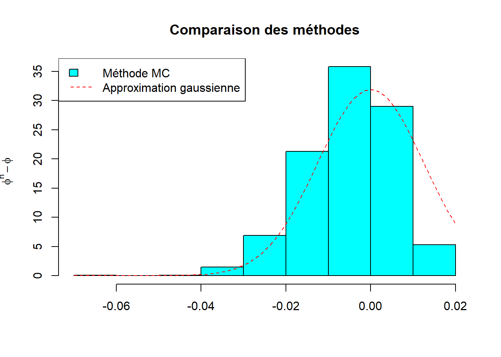
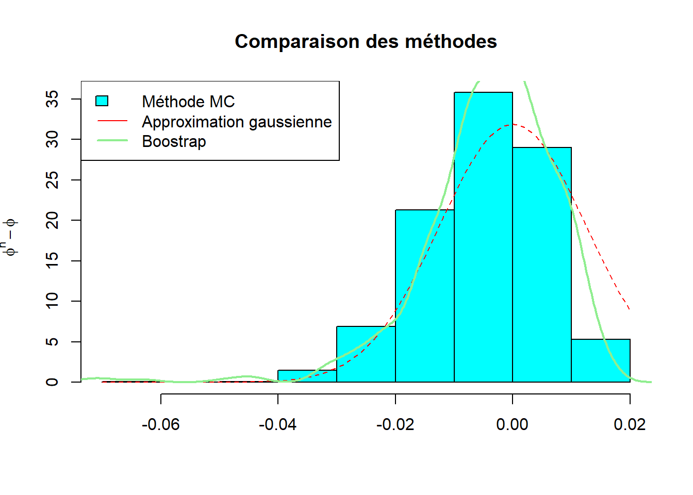

Code
# Données
library(dplyr) # manipulation des données
# Plots
## ggplot
library(ggplot2)
library(gridExtra)Clément Poupelin
Invalid Date
February 27, 2025
METTRE LES REMARQUES
METTRE LES POINTS D’ATTENTION
Résultats
METTRE LES CONCLUSIONS
─ Session info ───────────────────────────────────────────────────────────────
setting value
version R version 4.2.1 (2022-06-23 ucrt)
os Windows 10 x64 (build 22631)
system x86_64, mingw32
ui RTerm
language (EN)
collate French_France.utf8
ctype French_France.utf8
tz Europe/Paris
date 2025-02-27
pandoc 3.2 @ C:/Program Files/RStudio/resources/app/bin/quarto/bin/tools/ (via rmarkdown)
─ Packages ───────────────────────────────────────────────────────────────────
package * version date (UTC) lib source
dplyr * 1.1.4 2023-11-17 [1] CRAN (R 4.2.3)
ggplot2 * 3.5.1 2024-04-23 [1] CRAN (R 4.2.3)
gridExtra * 2.3 2017-09-09 [1] CRAN (R 4.2.1)
[1] C:/Users/cleme/AppData/Local/R/win-library/4.2
[2] C:/Program Files/R/R-4.2.1/library
──────────────────────────────────────────────────────────────────────────────On considère le modèle \[\begin{align} x_t = \mu + \phi(x_{t-1} - \mu) + w_t \end{align}\]
\(\longrightarrow\) Les valeurs des paramètres sont \(\mu = 50\) et \(\phi = .95\)
\(\longrightarrow\) On dispose d’un échantillon de longueur \(n = 100\).
\(\longrightarrow\) Hypothèse sur le bruit : la suite \((w_t)_t\) est une suite de va iid suivant la loi double exponentielle, c’est à dire la loi de densité \[\begin{align} f(x) = \frac{1}{4}e^{-\frac{|x|}{2}} \end{align}\]
On estime le paramètre \(\phi\) par l’estimateur de Yule Walker \(\hat{\phi}_n\). On peut calculer cet estimateur à l’aide de la fonction ar.yw.
Indication : Montrer que \(w_1 = XZ −X(1−Z)\) où la loi de \(X\) est la loi exponentielle de paramètre \(\frac{1}{2}\) et la loi de \(Z\) est la loi de Bernoulli de paramètre \(\frac{1}{2}\). \(X\) et \(Z\) sont indépendantes.
Nous commençons par mettre en oeuvre un générateur de nombres aléatoires suivant la loi du bruit.
(vous pouvez utiliser la fonction arima.sim, prendre n.start = 50 pour supprimer les 50 premières observations )
Nous voulons maintenant pouvoir simuler un processus AR(1) suivant notre modèle.
Nous souhaitons utiliser une méthode de Monté-Carlo pour construire un échantillon qui suit la loi de \(\hat{\phi}_n - \phi\).
# nombre d'itérations pour notre méthode MC
nb_iterations = 1000
# Echantillon pour stoccker les \hat{\phi}_n - \phi
echantillon_phi=rep(0, nb_iterations)
# Matrice pour stocker nos simulations d'où l'on prélèvera le \phi estimé
x=matrix(NA,nrow = nb_iterations,ncol=nb_iterations)
for (i in 1:nb_iterations) {
x[i,] = simu_ar(mu, phi, n)
# Estimer phi avec Yule-Walker
phi_n = ar.yw(x[i,], order = 1)$ar
echantillon_phi[i] = phi_n - phi
}
On simule un échantillon d’observations.
Pour cette estimation, on utilise le fait que \[\begin{align} \hat{\phi}_n - \phi \underset{n\to +\infty}{\longrightarrow} \mathcal{N}_{(0, \sigma^2)} \end{align}\]
Puis, grâce au théorème de Slutsky, on a \[\begin{align} \frac{\hat{\phi}_n - \phi}{\hat{\sigma}} \underset{n\to +\infty}{\longrightarrow} \mathcal{N}_{(0, 1)}\\ \end{align}\]
On peut donc estimer \(\sigma^2\) puis utiliser cette estimation pour proposer une représentation de l’approximation asymptotique gaussienne de la loi de \(\hat{\phi}_n - \phi\)
Nous voulons faire une approximation gaussienne de la densité de \(\hat{\phi}_n - \phi\). Pour cela, nous estimons \(\phi\) grâce à l’estimateur de Yule Walker. Grâce à cet estimateur, nous avons également une estimation de la variance. Avec cette dernière, nous pouvons alors simuler une loi gaussienne \(\mathcal{N}(0,\hat\sigma^2)\) où \(\hat\sigma^2\) est l’estimateur de la variance.
Pour vérifier que l’on a une bonne estimation, nous pouvons comparer à la densité obtenue par Monté-Carlo.
hist(echantillon_phi,
ylab = TeX("$phi^n - phi$"),
xlab="",
probability = TRUE,
col='cyan',
main="Comparaison des méthodes")
curve(dnorm(x, 0, sigma_hat), add = TRUE, lty = 2, col = "red")
#lines(seq(-.05, .03, length.out=1000),normal, col="red", lty=1)
legend("topleft", legend=c("Méthode MC","Approximation gaussienne"),
fill=c("cyan",NA),lty=c(0,2),col=c(NA,"red"), border=c("black",NA),
pch=c(22,NA))
La méthode utilisée est détaillée dans le CM
Nous souhaitons mettre en oeuvre un bootstrap non paramétrique sur nos résidus.
# Phi estimé
phi_est = ar.yw(echant, order=1)$ar
# On récupère les résidus pour faire le bootstrap
res = echant
# Il faut récupérer les résidus
for (i in 2:n){
res[i] = echant[i]-phi_est*echant[i-1]
}
n_bootstrap = 500
phi_hat = numeric(n_bootstrap)
for (i in 1:n_bootstrap){
w_etoile = sample(res, replace=T) # Loi uniforme (def bootstrap)
# On simule de nouveau un AR(1) de notre modèle mais avec nos résidus estimés
test = arima.sim(list(ar=phi),n=n_bootstrap, innov=w_etoile,n.start=50) + mu
# On estime pour faire la représentation graphique
phi_hat[i] = ar.yw(test, order=1)$ar - phi
}Sinon, use le syst dans CM
\[\begin{align} X_t^* = X_t X_{t+1}^* = mu + \hat{\phi_n}() + w_t^* \end{align}\]
pour ne pas avoir a faire la boucle de création de résidus et avoir seulement une boucle.
Nous souhaitons comparer nos différentes méthodes:
hist(echantillon_phi,
ylab = TeX("$phi^n - phi$"),
xlab="",
probability = TRUE,
col='cyan',
main="Comparaison des méthodes")
curve(dnorm(x, 0, sigma_hat), add = TRUE, lty = 2, col = "red")
lines(density(phi_hat), col='lightgreen', lty=1, lwd = 2 )
legend("topleft", legend=c("Méthode MC","Approximation gaussienne", "Boostrap"),
fill=c("cyan",NA,NA),lty=c(0,1,1),col=c(NA,"red","lightgreen"), pch=c(22,NA,NA), border=c("black",NA,NA), lwd = c(0,1,2))
Nous voulons, à partir de nos échantillons bootstrappés, donner une approximation de l’intervalle de prévision à l’horizon 1 de niveau 95%.
On reprend notre méthode de bootstrap en ajoutant une étape de prévision
# Phi estimé
phi_est = ar.yw(echant, order=1)$ar
# On récupère les résidus pour faire le bootstrap
res = echant
# Il faut récupérer les résidus
for (i in 2:n){
res[i] = echant[i]-phi_est*echant[i-1]
}
n_bootstrap = 500
phi_hat = numeric(n_bootstrap)
prev = rep(NA, n_bootstrap)
phi_etoile = rep(NA, n_bootstrap)
for (i in 1:n_bootstrap){
w_etoile = sample(res, replace=T) # Loi uniforme (def bootstrap)
# On simule de nouveau un AR(1) de notre modèle mais avec nos résidus estimés
test = arima.sim(list(ar=phi), n=n, innov=w_etoile,n.start=50) + mu
phi_etoile[i] = ar.yw(test, order=1)$ar
# Prévision
prev[i] = phi_etoile[i] *test[n]
}[1] "ecart-type de prévision à h=1 : 9.84"# l'intervalle de prévision approximé par bootstrap
prev.yw = predict(esti, h=1)
bornes = as.numeric(prev.yw$pred) - quantile(prev - as.numeric(prev.yw$pred),
c(0.975, 0.025))
q_inf = bornes[1]
q_sup = bornes[2]
print(paste("Intervalle bootstrap de prévision à h=1 : [", round(q_inf,2), ",", round(q_sup,2), "]"))[1] "Intervalle bootstrap de prévision à h=1 : [ -81.52 , -44.69 ]"---
title: "Fiche 06 : Bootstrap"
author: "Clément Poupelin"
date: "2025-02-xx"
date-modified: "`r Sys.Date()`"
format:
html:
embed-resources: false
toc: true
code-fold: true
code-summary: "Show the code"
code-tools: true
toc-location: right
page-layout: article
code-overflow: wrap
toc: true
number-sections: false
editor: visual
categories: ["categorie 1", "cotegorie 2"]
image: ""
description: "Description"
---
# Intervenant.e.s
### Rédaction
- **Clément Poupelin**, [clementjc.poupelin\@gmail.com](mailto:clementjc.poupelin@gmail.com){.email}\
### Relecture
-
# Setup
:::: panel-tabset
## Packages
```{r, setup, warning=FALSE, message=FALSE}
# Données
library(dplyr) # manipulation des données
# Plots
## ggplot
library(ggplot2)
library(gridExtra)
```
## Fonctions
::: panel-tabset
### Fonction 1
### Fonction 2
:::
## Seed
::::
# Données
# Analyse
::: callout-note
METTRE LES REMARQUES
:::
::: callout-warning
METTRE LES POINTS D'ATTENTION
:::
:::: success-header
::: success-icon
:::
Résultats
::::
::: success
METTRE LES CONCLUSIONS
:::
# Conclusion
# Session info
```{r}
sessioninfo::session_info(pkgs = "attached")
```
```{r include=FALSE}
library(latex2exp)
library(MASS)
library(nptest)
```
On considère le modèle
\begin{align}
x_t = \mu + \phi(x_{t-1} - \mu) + w_t
\end{align}
$\longrightarrow$ Les valeurs des paramètres sont $\mu = 50$ et $\phi = .95$
$\longrightarrow$ On dispose d’un échantillon de longueur $n = 100$.
$\longrightarrow$ **Hypothèse sur le bruit** : la suite $(w_t)_t$ est une suite de va iid suivant la loi double exponentielle, c’est à dire la loi de densité
\begin{align}
f(x) = \frac{1}{4}e^{-\frac{|x|}{2}}
\end{align}
On estime le paramètre $\phi$ par l’estimateur de Yule Walker $\hat{\phi}_n$. On peut calculer cet
estimateur à l’aide de la fonction **ar.yw**.
### QUESTION 1 : Mettre en oeuvre un générateur de nombres aléatoires suivant la loi du bruit.
**Indication :** Montrer que $w_1 = XZ −X(1−Z)$ où la loi de $X$ est la loi exponentielle
de paramètre $\frac{1}{2}$ et la loi de $Z$ est la loi de Bernoulli de paramètre $\frac{1}{2}$. $X$ et $Z$ sont indépendantes.
```{r include=FALSE}
mu = 50
phi = .95
n = 1000
```
Nous commençons par mettre en oeuvre un générateur de nombres aléatoires suivant la loi du bruit.
```{r}
W=function(n) {
x=rexp(n, 1/2)
z=rbinom(n, 1, 1/2)
return(x * z - x * (1 - z))
}
```
### QUESTION 2 : Construire une fonction pour simuler des processus AR(1) suivant le modèle considéré.
(vous pouvez utiliser la fonction **arima.sim**, prendre **n.start = 50** pour supprimer les 50 premières observations )
Nous voulons maintenant pouvoir simuler un processus AR(1) suivant notre modèle.
```{r}
simu_ar=function(mu, phi, n) {
X=c()
X[1] = W(1)
for (i in 2:(n + 50)) {
X[i] = mu + phi * (X[i - 1] - mu) + W(1)
}
return(X[51:(n + 50)])
}
```
### QUESTION 3 : En utilisant une méthode de Monte Carlo construire un échantillon suivant la loi de $\hat{\phi}_n - \phi$ et représenter graphiquement la densité de la loi de $\hat{\phi}_n - \phi$ approchée à partir de cet échantillon.
Nous souhaitons utiliser une méthode de Monté-Carlo pour construire un échantillon qui suit la loi de $\hat{\phi}_n - \phi$.
```{r}
# nombre d'itérations pour notre méthode MC
nb_iterations = 1000
# Echantillon pour stoccker les \hat{\phi}_n - \phi
echantillon_phi=rep(0, nb_iterations)
# Matrice pour stocker nos simulations d'où l'on prélèvera le \phi estimé
x=matrix(NA,nrow = nb_iterations,ncol=nb_iterations)
for (i in 1:nb_iterations) {
x[i,] = simu_ar(mu, phi, n)
# Estimer phi avec Yule-Walker
phi_n = ar.yw(x[i,], order = 1)$ar
echantillon_phi[i] = phi_n - phi
}
```
```{r, echo=FALSE}
# Tracé de la densité de la loi de phiˆn − phi
hist(echantillon_phi,
main = TeX("Densité de $phi^n - phi$ par la méthode de Monte-Carlo"),
ylab = TeX("$phi^n - phi$"),
col = "cyan",
probability = TRUE
)
```
### QUESTION 4 : Simuler votre échantillon d’observations
On simule un échantillon d'observations.
```{r}
echant = simu_ar(mu,phi,n)
```
### QUESTION 5 : Estimer le paramètre $\phi$. Représenter graphiquement la densité de l’approximation asymptotique gaussienne de la loi de $\hat{\phi}_n - \phi$
Pour cette estimation, on utilise le fait que
\begin{align}
\hat{\phi}_n - \phi \underset{n\to +\infty}{\longrightarrow} \mathcal{N}_{(0, \sigma^2)}
\end{align}
Puis, grâce au théorème de Slutsky, on a
\begin{align}
\frac{\hat{\phi}_n - \phi}{\hat{\sigma}} \underset{n\to +\infty}{\longrightarrow} \mathcal{N}_{(0, 1)}\\
\end{align}
On peut donc estimer $\sigma^2$ puis utiliser cette estimation pour proposer une représentation de l'approximation asymptotique gaussienne de la loi de $\hat{\phi}_n - \phi$
Nous voulons faire une approximation gaussienne de la densité de $\hat{\phi}_n - \phi$. Pour cela, nous estimons $\phi$ grâce à l'estimateur de Yule Walker. Grâce à cet estimateur, nous avons également une estimation de la variance. Avec cette dernière, nous pouvons alors simuler une loi gaussienne $\mathcal{N}(0,\hat\sigma^2)$ où $\hat\sigma^2$
est l'estimateur de la variance.
```{r}
esti = ar.yw(echant, order = 1)
phi_hat = esti$ar # Estimateur de phi
sigma_hat = sqrt(esti$asy.var.coef) # Estimateur de l'écart type
```
Pour vérifier que l'on a une bonne estimation, nous pouvons comparer à la densité obtenue par Monté-Carlo.
```{r}
hist(echantillon_phi,
ylab = TeX("$phi^n - phi$"),
xlab="",
probability = TRUE,
col='cyan',
main="Comparaison des méthodes")
curve(dnorm(x, 0, sigma_hat), add = TRUE, lty = 2, col = "red")
#lines(seq(-.05, .03, length.out=1000),normal, col="red", lty=1)
legend("topleft", legend=c("Méthode MC","Approximation gaussienne"),
fill=c("cyan",NA),lty=c(0,2),col=c(NA,"red"), border=c("black",NA),
pch=c(22,NA))
```
### QUESTION 6 : Mettre en oeuvre le bootstrap non paramétrique sur les résidus. A partir de 500 échantillons bootstrappés construire une approximation de la loi de $\hat{\phi}_n - \phi$. Représenter graphiquement l’estimation de la densité de la loi de $\hat{\phi}_n - \phi$
La méthode utilisée est détaillée dans le CM
Nous souhaitons mettre en oeuvre un bootstrap non paramétrique sur nos résidus.
```{r}
# Phi estimé
phi_est = ar.yw(echant, order=1)$ar
# On récupère les résidus pour faire le bootstrap
res = echant
# Il faut récupérer les résidus
for (i in 2:n){
res[i] = echant[i]-phi_est*echant[i-1]
}
n_bootstrap = 500
phi_hat = numeric(n_bootstrap)
for (i in 1:n_bootstrap){
w_etoile = sample(res, replace=T) # Loi uniforme (def bootstrap)
# On simule de nouveau un AR(1) de notre modèle mais avec nos résidus estimés
test = arima.sim(list(ar=phi),n=n_bootstrap, innov=w_etoile,n.start=50) + mu
# On estime pour faire la représentation graphique
phi_hat[i] = ar.yw(test, order=1)$ar - phi
}
```
Sinon, use le syst dans CM
\begin{align}
X_t^* = X_t
X_{t+1}^* = mu + \hat{\phi_n}() + w_t^*
\end{align}
pour ne pas avoir a faire la boucle de création de résidus et avoir seulement une boucle.
### QUESTION 7 : Comparer les deux approximations (gaussienne et bootstrap) à la loi calculée par la méthode de Monte Carlo (que l’on peut comme la loi exacte aux approximations numériques près)
Nous souhaitons comparer nos différentes méthodes:
```{r}
hist(echantillon_phi,
ylab = TeX("$phi^n - phi$"),
xlab="",
probability = TRUE,
col='cyan',
main="Comparaison des méthodes")
curve(dnorm(x, 0, sigma_hat), add = TRUE, lty = 2, col = "red")
lines(density(phi_hat), col='lightgreen', lty=1, lwd = 2 )
legend("topleft", legend=c("Méthode MC","Approximation gaussienne", "Boostrap"),
fill=c("cyan",NA,NA),lty=c(0,1,1),col=c(NA,"red","lightgreen"), pch=c(22,NA,NA), border=c("black",NA,NA), lwd = c(0,1,2))
```
### QUESTION 8 : En utilisant vos échantillons bootstrappés donner une approximation de l’intervalle de prévision à l’horizon 1 de niveau 95% .
Nous voulons, à partir de nos échantillons bootstrappés, donner une approximation de l'intervalle de prévision à l'horizon 1 de niveau 95%.
On reprend notre méthode de bootstrap en ajoutant une étape de prévision
```{r}
# Phi estimé
phi_est = ar.yw(echant, order=1)$ar
# On récupère les résidus pour faire le bootstrap
res = echant
# Il faut récupérer les résidus
for (i in 2:n){
res[i] = echant[i]-phi_est*echant[i-1]
}
n_bootstrap = 500
phi_hat = numeric(n_bootstrap)
prev = rep(NA, n_bootstrap)
phi_etoile = rep(NA, n_bootstrap)
for (i in 1:n_bootstrap){
w_etoile = sample(res, replace=T) # Loi uniforme (def bootstrap)
# On simule de nouveau un AR(1) de notre modèle mais avec nos résidus estimés
test = arima.sim(list(ar=phi), n=n, innov=w_etoile,n.start=50) + mu
phi_etoile[i] = ar.yw(test, order=1)$ar
# Prévision
prev[i] = phi_etoile[i] *test[n]
}
```
```{r}
# ecart-type de l'erreur de prévision approximé par bootstrap
sigma.prev.boot = sd(prev)
print(paste("ecart-type de prévision à h=1 : ", round(sigma.prev.boot, 2))
)
# l'intervalle de prévision approximé par bootstrap
prev.yw = predict(esti, h=1)
bornes = as.numeric(prev.yw$pred) - quantile(prev - as.numeric(prev.yw$pred),
c(0.975, 0.025))
q_inf = bornes[1]
q_sup = bornes[2]
print(paste("Intervalle bootstrap de prévision à h=1 : [", round(q_inf,2), ",", round(q_sup,2), "]"))
```
### QUESTION 9 : Mettre en oeuvre le bootstrap stationnaire et donner une approximation de l’intervalle de prévision à l’horizon 1.
### QUESTION 10 : Comparer les résultats obtenus par bootstrap avec l’intervalle théorique de prévision.